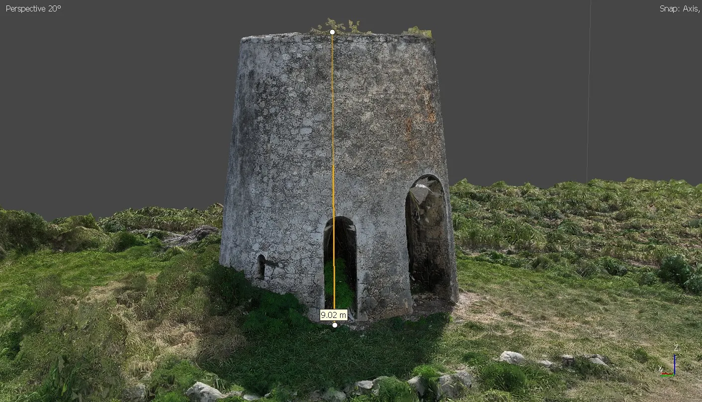
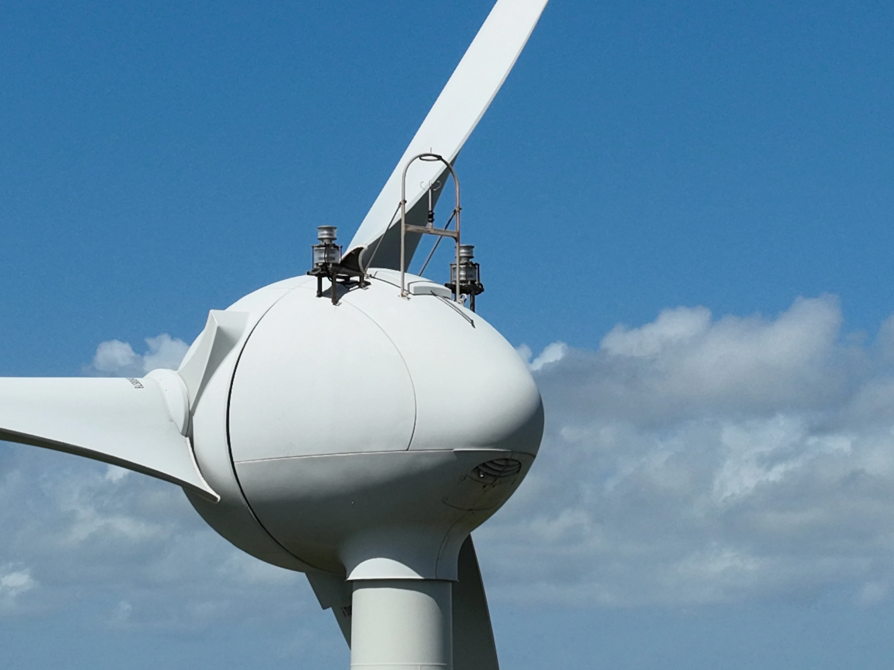

Drone professionnel en Guadeloupe
Photo, vidéo et inspection aérienne
Acquisition et traitement de données par drone haute précision pour l'inspection technique, la construction, l'ingénierie, l'agriculture et l'environnement.
Guadeloupe & Antilles françaises
KanaloEye, votre partenaire drone en Guadeloupe
KanaloEye est une entreprise spécialisée dans les prestations de drone professionnel en Guadeloupe et dans l'ensemble des Antilles françaises — Martinique, Saint-Martin, Saint-Barthélemy, Marie-Galante et les Saintes.
Fondée par Sébastien Cnudde, télépilote certifié DGAC (CATS), KanaloEye accompagne les professionnels du BTP, de l'agriculture, de l'énergie, de l'immobilier et du tourisme avec des données aériennes fiables et exploitables.
Nous maîtrisons les spécificités locales : milieux insulaires tropicaux, biodiversité exceptionnelle et risques naturels propres aux Antilles. Nous permettons la collecte de données fiables pour accompagner la prise de décision, tout en réduisant les coûts et les risques.
Grâce à un équipement de pointe — le DJI Mavic 3 Multispectral avec module RTK — nous atteignons un positionnement centimétrique (~2 cm) sans points d'appui au sol (GCP). La chaîne complète est maîtrisée en interne : acquisition par drone, traitement photogrammétrique (Agisoft Metashape), analyse SIG (QGIS, Global Mapper), montage vidéo et livraison de livrables exploitables.

Pourquoi choisir le drone en Guadeloupe ?
Les avantages concrets de recourir à une solution drone professionnelle en Guadeloupe et Antilles françaises.
Coût réduit
Jusqu'à 10 fois moins cher que les avions ou hélicoptères pour des missions similaires de photographie aérienne, d'inspection ou de cartographie en Guadeloupe.
Adaptable
Interventions dans les zones difficiles d'accès, dangereuses ou accidentées : falaises, toitures, pylônes, mangroves et reliefs volcaniques de la Basse-Terre.
Opérationnel et flexible
Déployable rapidement sur tout l'archipel guadeloupéen et les Antilles françaises, y compris Marie-Galante, Les Saintes et La Désirade.
Positionnement centimétrique
Précision de ~2 cm grâce au module RTK embarqué, sans nécessiter de points d'appui au sol (GCP). Idéal pour la topographie et la cartographie drone.
Sécurité
Missions réalisées sans exposer le personnel à des risques. Accès sécurisé aux zones inaccessibles pour l'inspection technique d'éoliennes, toitures et façades.
Données exploitables
Livrables aux formats standards (GeoTIFF, SHP, LAS, OBJ), prêts à intégrer dans vos outils SIG et logiciels métiers.
Nos interventions drone par secteur en Guadeloupe
Des solutions drone adaptées à chaque métier, avec des livrables exploitables dans vos outils professionnels.
BTP & Construction
Suivi de chantier par drone, calcul de cubatures (déblais/remblais), plans de masse, topographie RTK centimétrique, inspection de structures et inspection de toitures.
Agriculture & Environnement
Agriculture de précision par drone multispectral : indices NDVI, NDRE, NDWI pour le suivi des cultures de canne à sucre, banane et cultures maraîchères. Suivi environnemental des zones humides.
Énergie & Infrastructures
Inspection technique par drone d'éoliennes, parcs photovoltaïques et lignes électriques. Imagerie thermique pour la détection de panneaux solaires défaillants. Rapport photographique géolocalisé.
Patrimoine & Archéologie
Modélisation 3D par photogrammétrie de sites patrimoniaux : moulins à vent historiques, vestiges sucriers, habitations coloniales. Nuages de points denses et modèles texturés.
Immobilier & Tourisme
Photographie aérienne et vidéo drone 4K pour la promotion immobilière et touristique. Vues aériennes de propriétés, hôtels et sites touristiques en Guadeloupe.
Littoral & Risques naturels
Cartographie du littoral guadeloupéen, suivi de l'érosion côtière, état des lieux post-cyclone, surveillance des mangroves. Orthomosaïques pour la gestion des risques naturels.
Services de drone professionnel en Guadeloupe
De la captation aérienne au traitement de données, des prestations complètes. Voir tous nos services et tarifs →
🌱 Agriculture de précision
Indices NDVI, NDRE, NDWI. Stress hydrique, comptage et cartographie de la santé des cultures par drone multispectral.
🔍 Inspection technique
Contrôle de toitures, façades, éoliennes, pylônes et infrastructures. Rapport photographique géolocalisé.
📐 Photogrammétrie 3D
Nuages de points denses, modèles 3D texturés et MNS. Patrimoine, bâtiments et ouvrages.
🗺️ Cartographie aérienne
Orthomosaïques haute résolution (jusqu'à 2 cm/px), plans de masse, livrables GeoTIFF et SIG.
📏 Topographie & cubatures
Relevés centimétriques RTK, calcul de volumes déblais/remblais, plans de masse BTP.
🎬 Photo & vidéo 4K
Prises de vues aériennes pour communication, immobilier et tourisme. RAW et vidéo 4K.
Réalisations drone en Guadeloupe
Missions réalisées — modélisation 3D, inspection d'éoliennes, cartographie de parcs solaires. Voir toutes nos réalisations →

Modélisation 3D — Moulin de Petit-Canal
Capture photogrammétrique et modélisation d'un moulin historique, patrimoine sucrier guadeloupéen.

Inspection technique — Éolienne
Contrôle visuel HD des pales, du moyeu et de la nacelle, sans intervention humaine en hauteur.

Orthophotographie — Champ solaire
Cartographie haute résolution et détection thermique des panneaux défaillants.
FAQ — Drone professionnel en Guadeloupe
Les réponses aux questions les plus courantes sur nos prestations drone en Guadeloupe et Antilles françaises.
Combien coûte une mission drone en Guadeloupe ?
Les tarifs démarrent à partir de 250 € pour une captation photo ou vidéo aérienne, et à partir de 500 € pour les missions techniques (photogrammétrie, cartographie, inspection, topographie RTK). Chaque mission est unique : un devis personnalisé vous est transmis sous 24h.
Quelles autorisations faut-il pour faire voler un drone en Guadeloupe ?
Le télépilote doit être certifié DGAC (certificat CATS). Selon la zone de vol, des autorisations préfectorales peuvent être nécessaires. KanaloEye se charge de toutes les démarches administratives et réglementaires. Consultez notre carte des restrictions de vol. Pour en savoir plus, lisez notre guide complet sur la réglementation drone en Guadeloupe.
Dans quelles zones intervenez-vous ?
KanaloEye intervient sur l'ensemble de la Guadeloupe (Grande-Terre, Basse-Terre), ainsi que dans les Antilles françaises : Martinique, Marie-Galante, Les Saintes, La Désirade, Saint-Martin et Saint-Barthélemy.
Quel drone utilisez-vous ?
Le DJI Mavic 3 Multispectral (M3M) avec module RTK (~2 cm de précision). Caméra RGB haute résolution + caméra multispectrale 4 bandes + vidéo 4K. En savoir plus sur l'équipement →
Quels livrables fournissez-vous après une mission ?
Selon la mission : photos RAW/JPEG, vidéos 4K montées, orthomosaïques géoréférencées (GeoTIFF), modèles 3D texturés, nuages de points, MNS/MNT, cartes NDVI/NDRE/NDWI, rapports d'inspection géolocalisés, cubatures et plans de masse. Tous aux formats standards SIG.
Quel est le délai pour recevoir les résultats ?
24 à 48h pour photo/vidéo. 3 à 7 jours ouvrés pour les missions techniques (photogrammétrie, cartographie, analyse multispectrale).
Articles sur le drone en Guadeloupe
Guides pratiques, réglementation et retours terrain. Voir tous les articles →